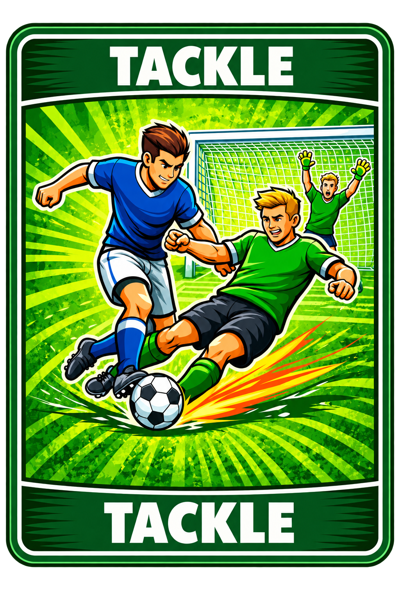

MATCH MODE RULEBOOK V9
HIGH DIFFICULTY 3v3 SOCCER CARD BATTLE
Every card creates a tactical decision.
Card Encyclopedia





SOCCER
The ball. The player holding Soccer controls possession.
SHOOT
Starts an attack toward the opponent goal.
DEFENSE
Stops the current SHOOT. Soccer stays with attacker.
TACKLE
Stops the action and steals Soccer.
YELLOW
Cancels DRIBBLE or YELLOW on the current defensive line.
DRIBBLE PAST
Beats a defender who blocks the attack.
1. Setup
Each team has Defender 1, Defender 2 and Goalkeeper. Reveal positions. Deal equal cards. Teammates may exchange cards one-for-one before the match. Extra cards are discarded.
Rock-Paper-Scissors decides the first Soccer possession.
2. Possession and Passing
During a pass, opponents may use TACKLE. A successful TACKLE steals Soccer and creates a new attack.
3. Full Attack Flow
Defender Response
DEFENSE stops this SHOOT only. Soccer remains with attacker.
TACKLE stops the attack and takes Soccer.
No defense means the attacker moves forward automatically.
4. DRIBBLE AND CHASE BACK
DRIBBLE is used when a defender successfully blocks the attack.
The defender may discard one card to chase back and defend again, or allow the attack to continue.
5. Yellow Timing
D1 Yellow only affects D1. D2 Yellow only affects D2.
Yellow can cancel DRIBBLE or another YELLOW.
Yellow cannot cancel SHOOT, DEFENSE, or help another defensive line.
6. Goalkeeper
GK without DEFENSE concedes a goal.
GK DEFENSE starts Rock-Paper-Scissors. Winner decides SAVE or GOAL.
GK Attack
When GK owns Soccer, GK may PASS or SHOOT.
7. Turnover Reset
Previous defensive progress, dribbles and chase states are cleared.
8. Match End
The match ends after 10 minutes or when neither team can create a valid attack.
9. Penalty Shootout
Real football style: 5 rounds. Each shooter draws one card. Opposing GK draws one new card.
SHOOT without DEFENSE = GOAL. SHOOT with DEFENSE = SAVE. No SHOOT = MISS.
After 5 rounds, higher score wins. Tie continues with sudden death.